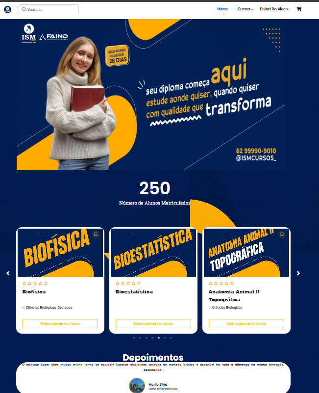
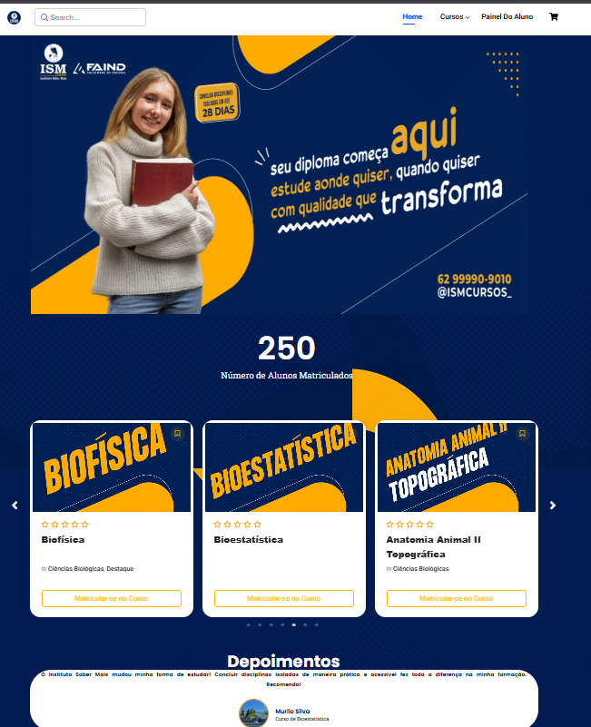

Murilo Francisco da Silva
Estudante de Engenharia da Computação | Desenvolvedor Web | Intercambista AULP
Estudante de Engenharia da Computação | Desenvolvedor Web | Intercambista AULP
Sou estudante da Universidade Federal do Rio Grande do Norte (UFRN) com ênfase em Engenharia da Computação. Durante meu percurso acadêmico, participei de um intercâmbio internacional em Portugal, no Instituto Politécnico de Coimbra, onde conclui a licenciatura em Engenharia Informática. Apaixonado por tecnologia, web e impacto social, atuei como bolsista de suporte técnico na UFRN, instrutor de robótica para crianças e divulgador do programa AULP nas redes sociais.
Desenvolvido para a Escola de Música da UFRN. Possui calendário interativo, formulário inteligente, regras de uso e integração com Google Calendar.
Site institucional com área do aluno, certificados automáticos, painel de notas, avaliações, relatórios e sistema de pagamento.
Desenvolvi um sistema web para gestão de serviços de limpeza. Permite que clientes solicitem e acompanhem serviços de forma prática. Funcionalidades:
Site inspirado no original da TAP, criado com HTML, CSS (SASS) e JavaScript sem frameworks. Funcionalidades:


 
